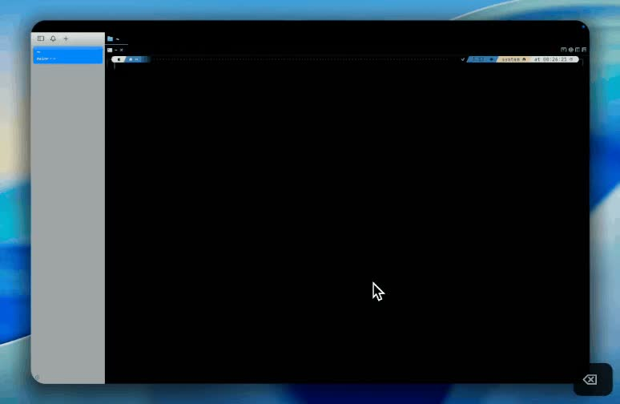
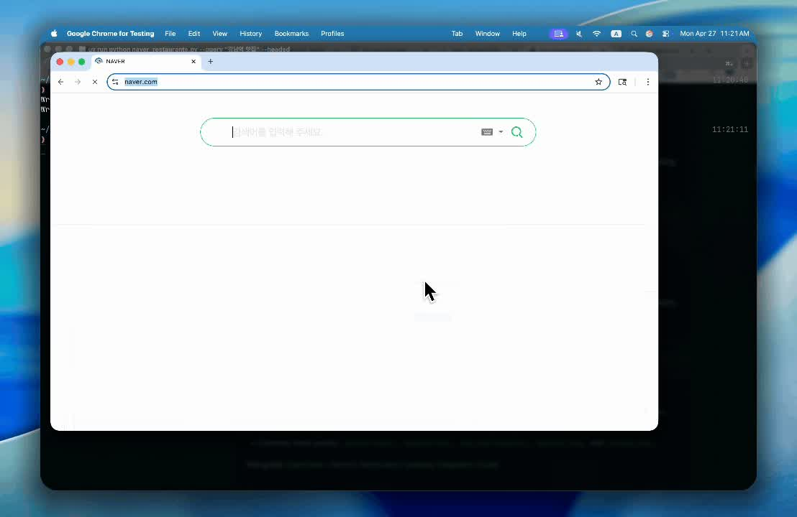

AI BUILDERS LABCLASS 01
Codex내 첫 자동화

Codex 첫걸음과 첫 자동화
흩어진 모임 메모를 요약·할 일·미정 사항으로 정리합니다. 설치부터 결과 파일을 여는 순간까지, 한 단계씩 함께해요.
메모를 정해진 형식으로 정리하는 작업
4개 챕터 · 실습 교재 제공과정 보기 ↗
반복 업무 끝내기

CLASS 02 · 활용
자료를 읽고 정리하는 나만의 규칙을 만듭니다. 문서 초안부터 재사용 요청문까지, 반복 업무의 작은 흐름을 익혀요.
메모 정리를 해봤고 다른 업무에도 적용하고 싶은 분
01 첫걸음 완료 또는 파일을 열고 요청·결과 확인을 혼자 할 수 있는 경험
PROJECT PREVIEW
아래는 외부 강의의 참고 데모예요. 우리 과정에서 만들 결과물은 아래 교육용 예시로 확인하세요.
CURRICULUM
4개 챕터 · 직접 해보는 12개 학습 항목
교육 설계안입니다. 개설 회차·기간은 아직 정하지 않았습니다.
BEFORE WE START
개인정보 없는 샘플 문서 두 개와 반복해서 하는 일 하나
원하는 결과와 다르면 여러 조건을 한꺼번에 바꾸지 않습니다. 빠진 항목 한 가지를 짚고 예시를 붙여 다시 요청하세요.
샘플·요청문·정상 결과·오류 대처가 있는 단계별 실습 교재를 제공합니다.
도움 요청 예시 보기 ↗